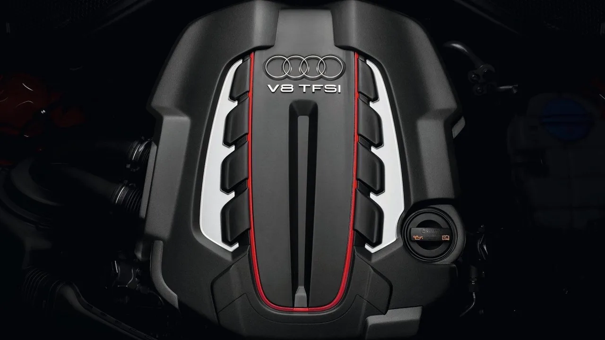
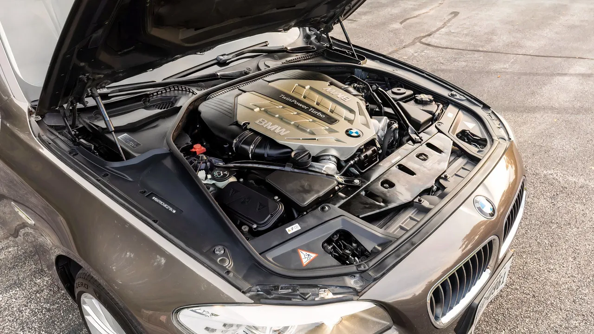
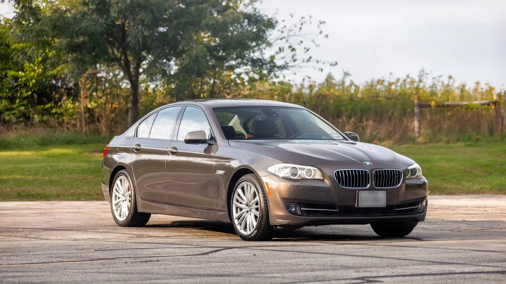
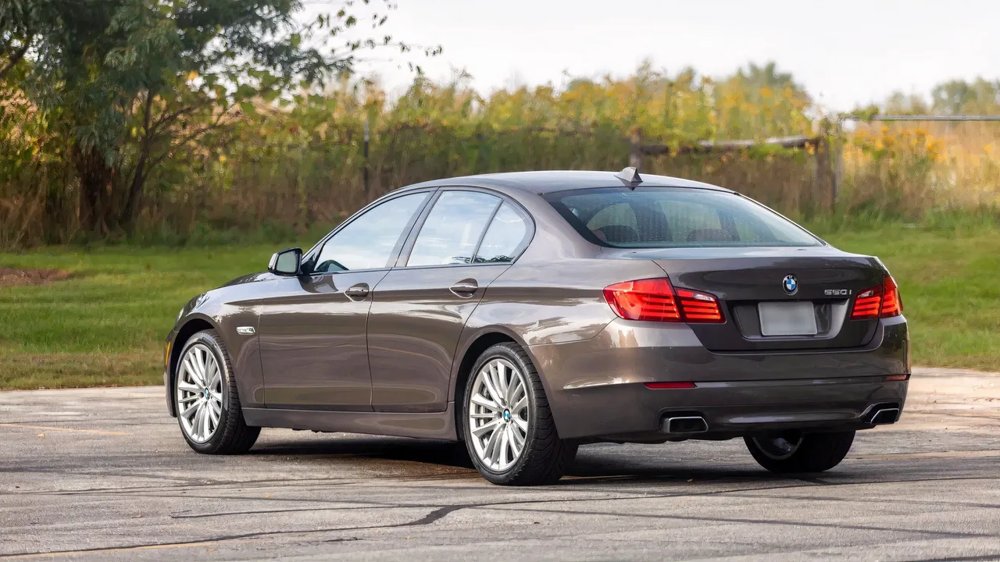

▲ 고성능 독일 세단은 성능만 빠른 게 아니라 가치가 내려가는 속도도 빠르다
V8의 고향은 미국입니다. 그런데 독일도 만만치 않게 만들어 왔습니다.
독일 엔지니어가 차에 성격을 넣으려 할 때 첫 선택은 대체로 8기통이었습니다. 스포츠카인 메르세데스-벤츠 SL이든, 아우디 RSQ8 같은 SUV든 마찬가지였습니다.
그리고 이 차들은 직선에서만 빠른 게 아닙니다. 가치가 떨어지는 속도도 빠릅니다. 그 결과 중고 시장에 이상한 구간이 생겼습니다.
1. 왜 이 가격이 가능한가
고성능차의 감가는 일반 모델보다 가파릅니다. 이유는 여러 가지입니다.
신차 가격 자체가 높아 절대 하락폭이 크고, 유지비 부담 때문에 수요층이 좁아지며, 세대 교체 시 신형과의 성능 격차가 부각되기 때문입니다.
| 요인 | 작용 |
|---|---|
| 높은 신차가 | 같은 비율이어도 절대 하락폭이 큼 |
| 유지비 | 수요층이 좁아 중고 수요 제한 |
| 세대 교체 | 신형 대비 성능·기술 격차 부각 |
| 연비·세금 | 대배기량에 대한 부담 |

▲ 독일 V8. 신차 시절 이 엔진 값만으로도 상당한 금액이 매겨졌다 ⓒ CarBuzz
2. 첫 번째 후보, AMG E63
CarBuzz가 첫 번째로 꼽은 것은 2010년식 메르세데스-AMG E63입니다.
이유는 엔진입니다. 메르세데스-AMG는 좋은 V8을 많이 만들었지만, 그 가운데 백조의 노래로 꼽히는 것이 2000년대의 6.2리터 자연흡기 V8입니다. 다른 어떤 것과도 다른 소리를 내는 엔진으로 평가됩니다.
📍 왜 6.2 자연흡기가 특별한가
이후 AMG는 다운사이징 트윈터보로 넘어갔습니다. 출력은 더 높아졌지만 소리와 반응의 성격이 달라졌습니다.
6.2리터 자연흡기는 과급기 없이 배기량으로 밀어붙인 마지막 세대입니다. 지금은 배출가스 규제상 같은 방식으로 다시 만들기 어렵습니다.

▲ 엔진룸을 가득 채우는 대배기량 V8. 지금은 규제상 같은 방식으로 만들기 어렵다 ⓒ CarBuzz
3. 같은 값의 선택지와 비교하면
비교 대상이 흥미롭습니다. 같은 예산이면 하이브리드 토요타 코롤라 같은 신차를 살 수도 있습니다.
한쪽은 새 차의 보증과 연비, 다른 쪽은 10년 이상 된 고성능 세단입니다. 둘 중 무엇을 고를지는 계산이 아니라 성향의 문제에 가깝습니다.
| 구분 | 신차 하이브리드 | 중고 독일 V8 |
|---|---|---|
| 연비 | 매우 좋음 | 나쁨 |
| 보증 | 있음 | 없음 |
| 정비비 | 낮음 | 높음 |
| 감가 | 진행 중 | 대부분 끝남 |
| 주행 감성 | 실용 | 대체 불가 |

▲ 같은 예산대에 놓이는 BMW 5시리즈. 세단 형태로 V8을 경험할 수 있는 선택지다 ⓒ CarBuzz
4. 진짜 비용은 구매 이후
이 구간에서 가장 중요한 원칙은 하나입니다. 구매가는 총비용의 일부일 뿐입니다.
대배기량 V8은 연료비가 크고, 소모품 단가가 높으며, 노후 개체는 예방 정비가 필수입니다. 구매가에서 아낀 금액이 첫해 정비비로 나가는 경우도 드물지 않습니다.
| 항목 | 이유 |
|---|---|
| 정비 이력 | 예방 정비 여부가 이후 비용을 좌우 |
| 소모품 교체 시점 | 타이어·브레이크 단가가 일반차와 다름 |
| 전자장비 상태 | 노후 개체의 고장 다발 구간 |
| 부품 수급 | 국내 유통 여부와 리드타임 |
5. 국내 사정은 조금 다릅니다
이 목록은 미국 중고 시장 기준입니다. 국내에서는 조건이 다릅니다.
배기량 기준 자동차세가 크게 붙고, 대배기량 수입차의 부품 수급과 공임이 미국보다 부담스럽습니다. 같은 차라도 유지비 구조가 다르다는 뜻입니다.
그러나 흐름 자체는 국내에도 있습니다. 고성능 수입차의 감가가 진행되면서, 신차 시절에는 넘볼 수 없던 모델이 특정 연식 구간에서 접근 가능한 가격에 놓이는 현상은 동일합니다.

▲ 감가가 끝난 구간에서는 추가 하락폭이 작다는 점이 오히려 장점이 되기도 한다 ⓒ CarBuzz
6. 이 구간의 매력
감가가 이미 진행된 차의 장점은 분명합니다. 앞으로 잃을 것이 상대적으로 적습니다.
신차는 사는 순간부터 값이 내려가지만, 10년 이상 지난 고성능차는 하락 곡선의 완만한 구간에 들어와 있습니다. 잘 관리된 개체라면 오히려 가치가 유지되기도 합니다.
다만 그 전제는 관리입니다. 이 구간의 차는 "싸게 사서 굴리는 차"가 아니라 "싸게 사서 제대로 관리하는 차"에 가깝습니다.